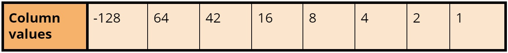
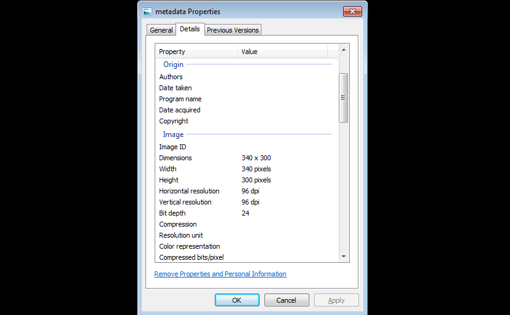

Data Types are needed to tell the computer what type of data we are entering. Different data types are stored and processed by the computer in different ways. Computers can't instantly recognise types of data without us telling the computer what type of data is being processed and stored.
The main data types are:
A table on different data typesRepresenting text
All data stored in a computer is stored in binary therefore data types are stored in binary. To make data readable by all computer systems an approach had to be implemented. One approach to represent characters and strings is ASCII.
In an ASCII table each character of the alphabet, special symbols and control code are represented by the agreed binary patterns.
ASCII is based on an 8-bit binary pattern (consisting of seven bits but also one parity bit - a bit that makes the binary number odd/even) which gave a possible combination of 128 separate characters.
Extended ASCII uses 8 bits and was able to give a possible combination of 256 separate characters.
Unicode was originally based on a 16-bit binary pattern which allowed a more than 65000 characters to be represented. But this was quickly updated to remove the 16-bit restriction.
The original ASCII takes up the first 256 characters of the Unicode character set.
 Here is an ASCII table
Here is an ASCII table
Boolean data
Boolean is a data type that can take one of two values either TRUE or FALSE. 1 represents TRUE and 0 represents FALSE.
Boolean data only requires one bit to store a value but is stored in one byte for convenience.
Representing positive integers in binary
Binary is a number system based on 2. The column values for 8-bit binary number is shown below:
8-bit Binary column value tableBinary numbers consist of 1s and 0s. To convert from binary to denary add the column values together for every column containing a 1, ignore all the 0s. For example a binary number of 01010110 will be:
How to convert binary to denaryTo convert from denary to binary divide by 2 and record each remainder - do this until you reach 0.
 How to convert denary to binary
How to convert denary to binary
Representing negative integers in binary
You can represent negative integers in two ways: Sign and Magnitude, Two's complement
Sign and Magnitude is where the most significant bit (the bit in a multiple-bit binary number with the largest value) stores if the value is a positive or negative. This makes arithmetic within the computer complex. Here are the column values for 8-bit numbers:
 Sign and Magnitude column value table
Sign and Magnitude column value table
When storing the sign bit, store a positive number as 0 and a negative number as 1.
 How to convert denary to a sign and magnitude binary number
How to convert denary to a sign and magnitude binary number
Two’s complement is where the Most Significant Bit is considered negative if it is given a value of 1; in an 8-bit number the largest column value is -128 instead of 128. This makes arithmetic within the computer a lot easier to calculate.
 Two's complement column value tableHere is an example:
 How to convert denary to a two's complement binary number
How to convert denary to a two's complement binary number
Representing numbers in Hexadecimal
Hexadecimal is a number system with a base of 16. Computers don’t work in hexadecimal - they work in binary. Hexadecimal is used to make writing and reading binary numbers a lot simpler. For example FDA5 is a lot easier to read and write that the binary number of that value 1111110110100101. In hexadecimal the column headings are:
Hexadecimal column value tableBecause digits are used to represent the values 0 to 9 we have to use the letters (A-F) to represent the values 10 to 15 in hexadecimals.
 Denary numbers in Hexadecimal
Denary numbers in Hexadecimal
To convert a hexadecimal number into a binary number do the following:
To convert a denary number into a hexadecimal number you have to repeatedly divide by 16 and record the remainders.
Images and Sound
All data is stored in binary therefore images, sound and instructions are stored as binary patterns.
In an image a black can be represented as 1 and white is represented as 0. Therefore one black pixel requires 1 bit. If you had 8 pixels in a row you would have a byte.
This image is made up of 121 0s and 121 1s.Images can be more complicated than this, especially when several colours need to be represented.
Table on how many colours can be represented by a certain number of bits.Metadata is the information about the image that allows the computer to correctly interpret the binary data, of the image, accurately to recreate. Metadata can include information about the number of pixels per pixel, color depth, resolution and the dimensions of the image.
 Here is the Metadata shown for an image.Resolution is the number of pixels per unit. It can be measured in dpi (dots per inch). The higher the resolution the larger the data needed to store the image - the larger the file size is.
Colour depth is the number of bits used for each pixel. The more bits used the greater the amount of colours that can be represented - the larger the file size is.
Images can be stored in a bitmap format or a vector format. Here are the differences of a bitmap and vector image:
Differences of a Bitmap and Vector image.Sound is a continuously varying analogue signal. Computers store sound by converting the analogue data into digital/binary data. To do this the analogue sound is sampled at certain intervals. The sampled data is the data that are stored in the digital format.
There are two factors that affect sound: Sample rate and Bit rate.
The sample rate is the number of times the sound is sampled per second. It is measured in Hz and the higher the sample rate the better the approximation to the original analogue sound.
Here is a sound sample rate graph as you can see the bar chart doesn't hit all the points of the graph. This means that the sound quality won't match the original analogue sound.The bit rate is the number of bits per given time period for each sample in kilobits/s. The higher the bit rate the more accurate the sound is for the sample value.
The higher the sample rate and bit rate the better the quality. However having a higher sample/bit rate require more bits to store more samples as well as more bits to store a more detailed sample.
Instructions
Program Instructions and data are stored in binary.
When a program is run, the CPU goes to the start address to fetch the first instruction. A binary number is stored at this address, which is fetched and decoded into two parts: the operator and the operand.
The operand is a binary pattern that represents a machine-level instruction.e.g an instruction to add a value to the accumulator
The operand represents the data that contains a value or information needed to located data that is needed.e.g the binary value for a location containing data that is going to be used.
Computers can't tell the difference between data and instructions. It interprets what it finds NOT what it expects to find.e.g if there are errors in a program it might fetch what is meant to be data but interprets it as an instruction.
Questions
1. Convert the denary number 273 into a:(a) 16-bit number(b) hexadeximal number
2. Convert -89 into binary using:(a) 8-bit sign and magnitude representation(b) 8-bit two's complement representation
3. Explain how the image size and colour depth affect the size of an image size of an image file.
4. What metadata is stored with an image file?
5. Explain how bit rate and sample rate affect the size of a sound file.
6. Explain how instructions are coded in binary in a computer and how the computer is able to distinguish between instructions and data.
Answers
1. Convert the denary number 273 into a:(a) 16-bit number(b) hexadeximal numberANSWER:
2. Convert -89 into binary using:(a) 8-bit sign and magnitude representation(b) 8-bit two's complement representationANSWER:
3. Explain how the image size and colour depth affect the size of an image size of an image file.ANSWER:
4. What metadata is stored with an image file?
5. Explain how bit rate and sample rate affect the size of a sound file.ANSWER:
6. Explain how instructions are coded in binary in a computer and how the computer is able to distinguish between instructions and data.ANSWER: